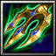

- 主要屬性 力量
攻擊範圍 128
- 基礎護甲 4
基礎攻速 1.8
- 基礎攻擊 96 - 114
基礎跑速 300
織田家臣，又稱又左衛門。身為信長身邊赤母衣眾為首，在諸戰中表現活躍。頗具武勇，人稱「槍之又左」。和秀吉夫婦是好友，當賤岳合戰發起時，他雖然隸屬於柴田勝家，但他不戰而退兵，讓秀吉獲得勝利。之後，成為豐臣政權的重臣， 輔佐秀吉治理天下。
移動的時候將不會被阻擋，並且有80%的機率閃避攻擊。
僅於發動「狂怒．槍之又左」時發生作用
-

-
W
衝擊槍
-
120/140/160/180
-
16/14/12/10
將目標敵人打飛出去，若是飛出去的敵人撞到任何單位，則會釋放衝擊力道使周圍敵人受到(200/300/400/500)傷害並且減緩40%移動速度(3/4/5/6)秒。
冷卻時間隨技能等級提升下降
-
-
E
神現一擊
-
120/120/120/120
-
16
使出穿越目標的一閃，對指定的目標造成(180/280/380/480)傷害並且暈眩(0.8/1.2/1.6/2.0)秒。
永久提升(4/7/10/13)點的力量，並且若是重覆攻擊同一個敵人，則攻擊傷害可以疊加12點，最高疊加(5/10/15/20)次，更換攻擊目標則此效果重新計算。
狂怒的槍之又左可以在戰場上盡情的追擊敵人，獲得極限的移動速度，並將不會被任何部隊所阻擋，此外還有80%機率閃躲來自敵人的攻擊；若有學習疊擊槍術，則開啟時疊加的次數馬上增加5次。持續(12/15/18)秒。
學習等級為6/12/18，不受緩速效果影響
永久性的提升(3/6/9/12)靈活、智慧和力量。